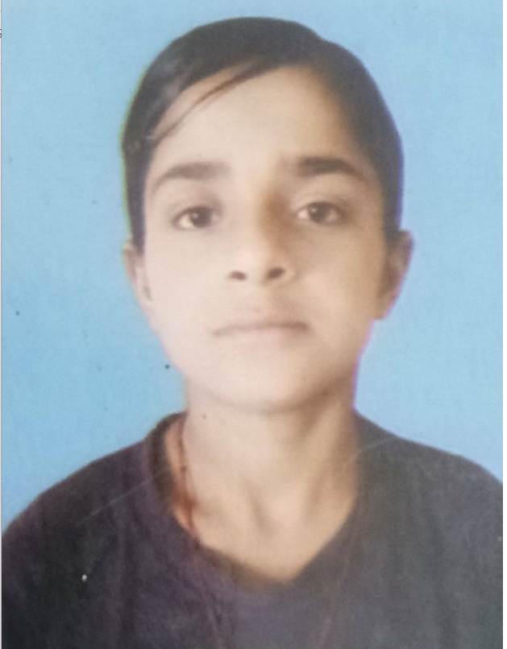

My Resume

Dimple(1st year engineering student)
About me-
-
I am a hardworking and dedicated individual with experience in Graphic Designing.
Fun Fact -I am obssessd with growth and hard work.
I love to listen and i am good speaker.
Education
- Completed my Junior High schooling from APS PRTC Bangalore.
- Completed my Senior High schooling from KV HEBBAL Bangalore.
- Pursing my B.TECH from Bnagalore Institute of Technology(BIT).
Interests / Hobbies
- Graphic Designing(creating logos, product designs, posters and many)
- Painting of Nature
- Sketching of anime charaters and some models
- Reading books on tech and many biographies
- Runing and playing many sports( football is my fav)
- writing code (c , python)
Skills
- LOGO Designing (from canvas)
- Drawing designs (from krita)
- Making Posters (from figma)
- Python(Programming Language from coursera)
- Learning web develpment (from udemy)
- C Programming Language
Summary
In all I am a girl ready to learn and grasp every possible opportunity for my better future.
I am here to share my current learnings and I am sure to become some hacker like they showed in hollywood movies(jokes):)
Future Goals(tech)
- Machine Learning
- Growing my github and linkdin account
- Learning App,Web and game developmen
- JAVA and DSA (from alpha course)
- Gssoc contributor
- Wining the Hackathons
- Gettting internship at MNC
- You tube channel on tech info, animation,drawing.
All Rights are preserved ©2023 My Resume